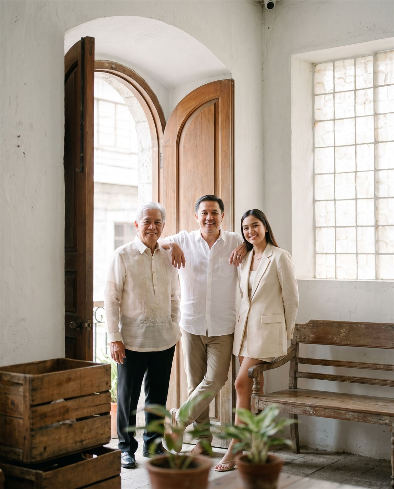

Our partners and strategic alliances
We help Filipino business families keep the family whole and the business growing, through succession, governance and the hard conversations in between.

Our partners and strategic alliances
Why it matters
The ones that survive decided early, and in writing, who leads, who owns, and how the family will handle disagreement.
[Source to be cited before launch]
Achieve generational wealth through holistic, integrated family enterprise programs. Most families start with the first.
Succession, estate and governance
A holistic process covering wealth, estate, organization and succession planning, with family unity kept at the centre.
Learn more →

Leadership, planning and people
Leadership development, strategic and operational planning, and human resource systems that outlast the founder.
Learn more →

Operations, people and process
The seven key processes a growing business runs on, reviewed, redesigned and handed over as something anyone competent can run.
Learn more →

Family council and board
Turning a signed family constitution into a family council and a board that still meet, and still decide, years later.
Learn more →
Our team
The only multidisciplinary team of family business consultants in the region, with global knowledge, local expertise and regional coverage.

CEO and Founder

Chief Operations Officer

Chief Partnership and Relationship Officer

Chief Finance Officer
How it works
01
We sit down with you and hear what is weighing on the family and on the business, in confidence.
02
We share practices for managing and growing a business across generations, as part of our advocacy for families in business.
03
We stay with you and your family through every step of professionalizing the family and the business.
What families say
“…things that are hard to discuss and open up about like sensitive matters and relationships, but through this program, it became easier to discuss and those cold relationships were restored. …Now I see everyone taking part in the decision making and I’m very happy because it gives us freedom and now Lito & I can happily retire and let the younger generation take care of the business that we started.”
Fe Barino
President, Duros Group of Companies
“This program left a big impact on my family and my children. Now, I’m sure that the future is looking good for the company I started and made a lot of sacrifices for.”
Aljune Diamante
Founder, Diamond Logistics & Custom Brokerage
“We have a very constructive experience with Premier. Even after the forming of the family constitution, they still joined our monthly board meeting for over 3 years…”
Edward Hayco
Founder, Hayco Group of Companies
Free resource
Twelve questions every family should be able to answer before the handover. [Checklist PDF to be supplied.]